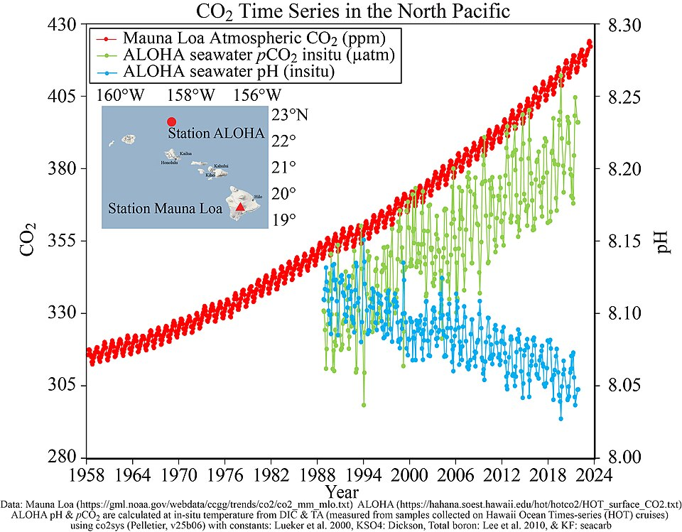
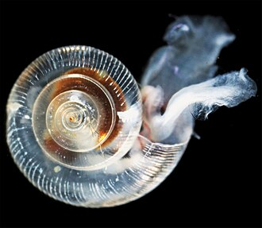

<!doctype html>
<html lang="en">
  <head>
    <meta charset="utf-8" />
    <meta name="viewport" content="width=device-width, initial-scale=1" />
    <title>Ocean Acidification — AP/IB Biology Lesson</title>

    <!-- Tailwind (Play CDN) -->
    <script src="https://cdn.tailwindcss.com"></script>

    <!-- React 18 UMD -->
    <script crossorigin src="https://unpkg.com/react@18/umd/react.production.min.js"></script>
    <script crossorigin src="https://unpkg.com/react-dom@18/umd/react-dom.production.min.js"></script>

    <!-- PropTypes (Recharts dependency) + Recharts UMD -->
    <script crossorigin src="https://unpkg.com/prop-types@15/prop-types.min.js"></script>
    <script crossorigin src="https://unpkg.com/recharts@2.12.7/umd/Recharts.js"></script>

    <!-- Babel standalone for in-browser JSX -->
    <script src="https://unpkg.com/@babel/standalone/babel.min.js"></script>

    <style>
      html, body, #root { height: 100%; }
      body { margin: 0; font-family: ui-sans-serif, system-ui, -apple-system, "Segoe UI", Roboto, sans-serif; }
      /* Let the Tailwind utilities do the rest. */
    </style>
  </head>
  <body>
    <div id="root"></div>

    <!-- App source — Babel compiles in-browser. -->
    <script type="text/babel" data-presets="react" data-type="module">
      const { useState, useMemo } = React;
      const {
        LineChart, Line, XAxis, YAxis, CartesianGrid, Tooltip, ResponsiveContainer,
        ReferenceLine, ComposedChart,
      } = Recharts;

      // --- Inline SVG icons (replaces lucide-react, keeps this file dependency-light) -----
      const Icon = (path, { size = 20, stroke = 2, className = "" } = {}) => (
        <svg xmlns="http://www.w3.org/2000/svg" width={size} height={size}
             viewBox="0 0 24 24" fill="none" stroke="currentColor"
             strokeWidth={stroke} strokeLinecap="round" strokeLinejoin="round"
             className={className}>
          {path}
        </svg>
      );
      const Droplet          = (p) => Icon(<path d="M12 2.69 5.64 9.05a9 9 0 1 0 12.72 0z" />, p);
      const Beaker           = (p) => Icon(<><path d="M4.5 3h15" /><path d="M6 3v16a2 2 0 0 0 2 2h8a2 2 0 0 0 2-2V3" /><path d="M6 14h12" /></>, p);
      const Fish             = (p) => Icon(<><path d="M6.5 12c.94-3.46 4.94-6 8.5-6 3.56 0 6.06 2.54 7 6-.94 3.47-3.44 6-7 6s-7.56-2.54-8.5-6Z" /><path d="M18 12v.5" /><path d="M16 17.93a9.77 9.77 0 0 1 0-11.86" /><path d="M7 10.67C7 8 5.58 5.97 2.73 5.5c-1 1.5-1 5 .23 6.5-1.24 1.5-1.24 5-.23 6.5C5.58 18.03 7 16 7 13.33" /></>, p);
      const Shell            = (p) => Icon(<><path d="M14 11a2 2 0 1 1-4 0 4 4 0 0 1 8 0 6 6 0 0 1-12 0 8 8 0 0 1 16 0 10 10 0 1 1-20 0 11.93 11.93 0 0 1 2.42-7.22 2 2 0 1 1 3.16 2.44" /></>, p);
      const BookOpen         = (p) => Icon(<><path d="M2 3h6a4 4 0 0 1 4 4v14a3 3 0 0 0-3-3H2z" /><path d="M22 3h-6a4 4 0 0 0-4 4v14a3 3 0 0 1 3-3h7z" /></>, p);
      const ClipboardCheck   = (p) => Icon(<><rect width="8" height="4" x="8" y="2" rx="1" ry="1" /><path d="M16 4h2a2 2 0 0 1 2 2v14a2 2 0 0 1-2 2H6a2 2 0 0 1-2-2V6a2 2 0 0 1 2-2h2" /><path d="m9 14 2 2 4-4" /></>, p);
      const Languages        = (p) => Icon(<><path d="m5 8 6 6" /><path d="m4 14 6-6 2-3" /><path d="M2 5h12" /><path d="M7 2h1" /><path d="m22 22-5-10-5 10" /><path d="M14 18h6" /></>, p);
      const ChevronLeft      = (p) => Icon(<path d="m15 18-6-6 6-6" />, p);
      const ChevronRight     = (p) => Icon(<path d="m9 18 6-6-6-6" />, p);
      const CheckCircle2     = (p) => Icon(<><circle cx="12" cy="12" r="10" /><path d="m9 12 2 2 4-4" /></>, p);
      const AlertTriangle    = (p) => Icon(<><path d="m21.73 18-8-14a2 2 0 0 0-3.48 0l-8 14A2 2 0 0 0 4 21h16a2 2 0 0 0 1.73-3Z" /><path d="M12 9v4" /><path d="M12 17h.01" /></>, p);
      const Waves            = (p) => Icon(<><path d="M2 6c.6.5 1.2 1 2.5 1C7 7 7 5 9.5 5c2.6 0 2.4 2 5 2 2.5 0 2.5-2 5-2 1.3 0 1.9.5 2.5 1" /><path d="M2 12c.6.5 1.2 1 2.5 1 2.5 0 2.5-2 5-2 2.6 0 2.4 2 5 2 2.5 0 2.5-2 5-2 1.3 0 1.9.5 2.5 1" /><path d="M2 18c.6.5 1.2 1 2.5 1 2.5 0 2.5-2 5-2 2.6 0 2.4 2 5 2 2.5 0 2.5-2 5-2 1.3 0 1.9.5 2.5 1" /></>, p);
      const Sparkles         = (p) => Icon(<><path d="M9.937 15.5A2 2 0 0 0 8.5 14.063l-6.135-1.582a.5.5 0 0 1 0-.962L8.5 9.936A2 2 0 0 0 9.937 8.5l1.582-6.135a.5.5 0 0 1 .963 0L14.063 8.5A2 2 0 0 0 15.5 9.937l6.135 1.581a.5.5 0 0 1 0 .964L15.5 14.063a2 2 0 0 0-1.437 1.437l-1.582 6.135a.5.5 0 0 1-.963 0z" /></>, p);

      // --- i18n dictionary --------------------------------------------------
      const T = {
        appTitle:      { en: "Ocean Acidification", es: "Acidificación del Océano" },
        appSub:        { en: "Climate Change's Evil Twin", es: "La Gemela Malvada del Cambio Climático" },
        start:         { en: "Start Lesson", es: "Comenzar la Lección" },
        next:          { en: "Next", es: "Siguiente" },
        prev:          { en: "Back", es: "Atrás" },
        section:       { en: "Section", es: "Sección" },
        of:            { en: "of", es: "de" },

        welcomeHeading:{ en: "Ocean Acidification", es: "Acidificación del Océano" },
        welcomeIntro:  { en: "In this lesson, you will explore how rising atmospheric CO₂ is changing ocean chemistry and threatening marine life — from microscopic plankton to entire coral reefs. You'll end the lesson by answering AP/IB-style questions you can copy straight into a Google Doc to turn in on Google Classroom.",
                         es: "En esta lección, explorarás cómo el aumento del CO₂ atmosférico está cambiando la química del océano y amenazando la vida marina — desde el plancton microscópico hasta los arrecifes de coral enteros. Al final, responderás preguntas estilo AP/IB que podrás copiar directamente a un Google Doc para entregar en Google Classroom." },
        yourInfo:      { en: "Before you begin", es: "Antes de comenzar" },
        yourName:      { en: "Your name", es: "Tu nombre" },
        period:        { en: "Class period", es: "Período de clase" },
        objectivesTitle:{ en: "Learning objectives", es: "Objetivos de aprendizaje" },
        obj1:          { en: "Explain the chemistry of how CO₂ acidifies seawater.",
                         es: "Explicar la química de cómo el CO₂ acidifica el agua de mar." },
        obj2:          { en: "Interpret the logarithmic relationship between pH and [H⁺].",
                         es: "Interpretar la relación logarítmica entre el pH y la [H⁺]." },
        obj3:          { en: "Predict which organisms are most vulnerable and explain why.",
                         es: "Predecir qué organismos son más vulnerables y explicar por qué." },
        obj4:          { en: "Analyze a real case study and apply scientific reasoning.",
                         es: "Analizar un estudio de caso real y aplicar razonamiento científico." },

        chemHeading:   { en: "The Chemistry, Step by Step", es: "La Química, Paso a Paso" },
        chemIntro:     { en: "Click through the four reactions that happen when CO₂ dissolves into seawater. Each step lowers the pool of carbonate ions (CO₃²⁻) that animals need to build shells.",
                         es: "Haz clic en las cuatro reacciones que ocurren cuando el CO₂ se disuelve en el agua de mar. Cada paso reduce la reserva de iones carbonato (CO₃²⁻) que los animales necesitan para construir conchas." },
        stepReset:     { en: "Reset steps", es: "Reiniciar pasos" },
        stepForward:   { en: "Reveal next step", es: "Mostrar siguiente paso" },
        stepDone:      { en: "Chemistry complete", es: "Química completa" },
        step1Eq:       { en: "CO₂ + H₂O → H₂CO₃", es: "CO₂ + H₂O → H₂CO₃" },
        step1Ex:       { en: "Atmospheric CO₂ dissolves into seawater and reacts with water to form carbonic acid (H₂CO₃).",
                         es: "El CO₂ atmosférico se disuelve en el agua de mar y reacciona con el agua para formar ácido carbónico (H₂CO₃)." },
        step2Eq:       { en: "H₂CO₃ → H⁺ + HCO₃⁻", es: "H₂CO₃ → H⁺ + HCO₃⁻" },
        step2Ex:       { en: "Carbonic acid dissociates, releasing hydrogen ions (H⁺). More H⁺ means lower pH — the ocean becomes more acidic.",
                         es: "El ácido carbónico se disocia, liberando iones de hidrógeno (H⁺). Más H⁺ significa un pH más bajo — el océano se vuelve más ácido." },
        step3Eq:       { en: "H⁺ + CO₃²⁻ → HCO₃⁻", es: "H⁺ + CO₃²⁻ → HCO₃⁻" },
        step3Ex:       { en: "Extra H⁺ combines with existing carbonate ions (CO₃²⁻), removing them from the water. The pool of free carbonate shrinks.",
                         es: "El H⁺ adicional se combina con los iones carbonato existentes (CO₃²⁻), retirándolos del agua. La reserva de carbonato libre disminuye." },
        step4Eq:       { en: "Less CO₃²⁻ → harder to build CaCO₃ shells",
                         es: "Menos CO₃²⁻ → más difícil formar conchas de CaCO₃" },
        step4Ex:       { en: "With less CO₃²⁻ available, calcifying organisms (corals, oysters, pteropods) struggle to build and maintain their calcium carbonate shells and skeletons.",
                         es: "Con menos CO₃²⁻ disponible, los organismos calcificadores (corales, ostras, pterópodos) luchan para construir y mantener sus conchas y esqueletos de carbonato de calcio." },

        pHExplorer:    { en: "Interactive: pH slider", es: "Interactivo: deslizador de pH" },
        pHExplorerIntro:{ en: "Move the slider to explore how a seemingly small drop in pH produces a big change in [H⁺]. The pH scale is logarithmic: each whole unit = 10× change.",
                          es: "Mueve el deslizador para explorar cómo una caída aparentemente pequeña del pH produce un gran cambio en la [H⁺]. La escala de pH es logarítmica: cada unidad entera = cambio de 10×." },
        pHLabel:       { en: "Ocean surface pH", es: "pH de la superficie del océano" },
        hPlusLabel:    { en: "[H⁺] concentration", es: "Concentración de [H⁺]" },
        pctLabel:      { en: "Change in [H⁺] vs. pre-industrial (pH 8.2)",
                         es: "Cambio en [H⁺] vs. pre-industrial (pH 8.2)" },
        preIndustrial: { en: "Pre-industrial (~1750)", es: "Pre-industrial (~1750)" },
        today:         { en: "Today (~2025)", es: "Hoy (~2025)" },
        proj2100:      { en: "Projected 2100", es: "Proyectado 2100" },

        whyHeading:    { en: "Why a Small pH Change Is a Big Deal",
                         es: "Por qué un Pequeño Cambio de pH es un Gran Problema" },
        whyBody:       { en: "Ocean surface pH has already dropped from ~8.2 to ~8.1 since the Industrial Revolution. That 0.1-unit drop means roughly a 30% increase in H⁺. If emissions continue, pH could fall another 0.3–0.4 units by 2100 — faster than anything recorded in the past 420,000 years.",
                         es: "El pH de la superficie del océano ya ha bajado de ~8.2 a ~8.1 desde la Revolución Industrial. Esa caída de 0.1 unidad significa aproximadamente un aumento del 30% en H⁺. Si las emisiones continúan, el pH podría caer otras 0.3–0.4 unidades para 2100 — más rápido que cualquier cambio registrado en los últimos 420,000 años." },
        pHTimelineTitle:{ en: "Projected ocean surface pH, 1750–2100",
                          es: "pH proyectado de la superficie del océano, 1750–2100" },
        year:          { en: "Year", es: "Año" },
        pH:            { en: "pH", es: "pH" },

        affectedHeading:{ en: "Who Is Affected?", es: "¿Quiénes se ven Afectados?" },
        affectedIntro: { en: "Click each organism to learn how ocean acidification disrupts its biology. These species sit at the base of many food webs — when they struggle, whole ecosystems feel it.",
                         es: "Haz clic en cada organismo para aprender cómo la acidificación del océano afecta su biología. Estas especies están en la base de muchas cadenas alimenticias — cuando sufren, ecosistemas enteros lo sienten." },
        omegaHeading:  { en: "Aragonite saturation (Ω_arag)", es: "Saturación de aragonita (Ω_arag)" },
        omegaBody:     { en: "Ω_arag is an index of whether aragonite (a form of CaCO₃) will form or dissolve. When Ω > 1, conditions favor shell-building. When Ω < 1, existing shells can begin to dissolve — the 'bricks' aren't just harder to make; the finished house starts falling apart.",
                         es: "Ω_arag es un índice que indica si la aragonita (una forma de CaCO₃) se formará o se disolverá. Cuando Ω > 1, las condiciones favorecen la formación de conchas. Cuando Ω < 1, las conchas existentes pueden comenzar a disolverse — los 'ladrillos' no solo son más difíciles de hacer; la casa terminada comienza a desmoronarse." },

        caseHeading:   { en: "Case Study: The Pacific Northwest Oyster Crash (2005–2009)",
                         es: "Estudio de Caso: El Colapso de las Ostras del Pacífico Noroeste (2005–2009)" },
        caseIntro:     { en: "One of the first real-world demonstrations of ocean acidification harming a human industry. Click through the story to see how scientists cracked the case.",
                         es: "Una de las primeras demostraciones reales de la acidificación del océano dañando una industria humana. Haz clic en la historia para ver cómo los científicos resolvieron el caso." },
        beat1Title:    { en: "Setting", es: "El escenario" },
        beat1Body:     { en: "Whiskey Creek Shellfish Hatchery on Netarts Bay, Oregon, is one of the largest suppliers of Pacific oyster (Crassostrea gigas) larvae on the U.S. West Coast. The regional shellfish industry generates over $110 million each year.",
                         es: "El criadero Whiskey Creek en la Bahía de Netarts, Oregón, es uno de los mayores proveedores de larvas de ostra del Pacífico (Crassostrea gigas) en la costa oeste de EE. UU. La industria regional de mariscos genera más de $110 millones al año." },
        beat2Title:    { en: "What happened", es: "Lo que sucedió" },
        beat2Body:     { en: "Starting in 2005, the hatchery lost 70–80% of its oyster larvae. Larvae died within 48 hours of spawning — before they could build their first paper-thin shells. A bacterial pathogen was suspected, but couldn't explain the pattern.",
                         es: "A partir de 2005, el criadero perdió entre el 70 y 80% de sus larvas de ostra. Las larvas morían dentro de las 48 horas posteriores al desove — antes de que pudieran formar sus primeras conchas delgadas como el papel. Se sospechaba de un patógeno bacteriano, pero no explicaba el patrón." },
        beat3Title:    { en: "The investigation", es: "La investigación" },
        beat3Body:     { en: "Chemist Burke Hales, hatchery manager Alan Barton, and biologist George Waldbusser measured three things at the intake pipe: (1) larval survival, (2) pH and dissolved CO₂, and (3) aragonite saturation state (Ω_arag). When Ω_arag fell below ~1.7, survival collapsed. Anthropogenic CO₂ had pushed naturally upwelled, corrosive water across a biological threshold.",
                         es: "El químico Burke Hales, el gerente Alan Barton y el biólogo George Waldbusser midieron tres cosas en la tubería de entrada: (1) supervivencia larval, (2) pH y CO₂ disuelto, y (3) el estado de saturación de aragonita (Ω_arag). Cuando Ω_arag caía por debajo de ~1.7, la supervivencia colapsaba. El CO₂ antropogénico había empujado el agua corrosiva de surgencia natural a través de un umbral biológico." },
        beat4Title:    { en: "The response", es: "La respuesta" },
        beat4Body:     { en: "Hatcheries installed real-time sensors, shifted water intake to the afternoon (when photosynthesizing phytoplankton raise pH), and buffered incoming water with sodium carbonate (Na₂CO₃). Larval survival rebounded — but wild oyster beds outside the hatchery are still in decline.",
                         es: "Los criaderos instalaron sensores en tiempo real, cambiaron la toma de agua a la tarde (cuando el fitoplancton fotosintetizador eleva el pH) y amortiguaron el agua entrante con carbonato de sodio (Na₂CO₃). La supervivencia larval se recuperó — pero los bancos de ostras silvestres fuera del criadero siguen en declive." },
        revealNext:    { en: "Reveal next", es: "Mostrar siguiente" },
        caseChartTitle:{ en: "Ω_arag vs. oyster larval survival (Whiskey Creek pattern)",
                         es: "Ω_arag vs. supervivencia larval de ostras (patrón Whiskey Creek)" },
        omegaAxis:     { en: "Aragonite saturation (Ω_arag)", es: "Saturación de aragonita (Ω_arag)" },
        survivalAxis:  { en: "Larval survival (%)", es: "Supervivencia larval (%)" },
        threshold:     { en: "Survival threshold ≈ 1.7", es: "Umbral de supervivencia ≈ 1.7" },

        co2FigTitle:   { en: "Real-world data: Station ALOHA, North Pacific",
                         es: "Datos reales: Estación ALOHA, Pacífico Norte" },
        co2FigCaption: { en: "As atmospheric CO₂ (top) rises, dissolved CO₂ in seawater (middle) rises in parallel — and ocean pH (bottom) drops. This is the chemistry of ocean acidification captured in real observations over three decades.",
                         es: "A medida que aumenta el CO₂ atmosférico (arriba), el CO₂ disuelto en el agua de mar (medio) aumenta en paralelo — y el pH del océano (abajo) disminuye. Esta es la química de la acidificación del océano capturada en observaciones reales durante tres décadas." },
        pteropodFigCaption: { en: "A live pteropod shell after 45 days in seawater adjusted to projected end-of-century chemistry. Without enough carbonate ions, the aragonite shell becomes pitted and translucent as it dissolves faster than the animal can rebuild it.",
                              es: "Una concha de pterópodo viva después de 45 días en agua de mar ajustada a la química proyectada para fines de siglo. Sin suficientes iones carbonato, la concha de aragonita se vuelve picada y translúcida a medida que se disuelve más rápido de lo que el animal puede reconstruirla." },

        challengeHeading:{ en: "Challenge Questions", es: "Preguntas de Desafío" },
        challengeIntro:  { en: "Answer each question in the box provided. When you're done, click the green button at the bottom to copy a clean, formatted version of your answers. Paste it into a new Google Doc and turn it in on Google Classroom.",
                           es: "Responde cada pregunta en el cuadro provisto. Cuando termines, haz clic en el botón verde al final para copiar una versión limpia y formateada de tus respuestas. Pégala en un nuevo Google Doc y entrégala en Google Classroom." },
        yourAnswer:     { en: "Your answer", es: "Tu respuesta" },
        copyBtn:        { en: "Copy / Compile Answers", es: "Copiar / Compilar Respuestas" },
        copied:         { en: "Copied! Paste into your Google Doc.", es: "¡Copiado! Pégalo en tu Google Doc." },
        copyFailed:     { en: "Copy failed — select and copy manually from the box below.",
                          es: "Error al copiar — selecciona y copia manualmente del cuadro de abajo." },
        recall:         { en: "Application (math)", es: "Aplicación (matemáticas)" },
        analysis:       { en: "Analysis", es: "Análisis" },
        synthesis:      { en: "Synthesis", es: "Síntesis" },
        frq:            { en: "FRQ / Evaluation", es: "RLA / Evaluación" },
        nameMissing:    { en: "Enter your name on the Welcome screen before copying.",
                          es: "Ingresa tu nombre en la pantalla de Bienvenida antes de copiar." },

        curriculumTitle:{ en: "Curriculum connections", es: "Conexiones curriculares" },
        apLabel:        { en: "AP Biology", es: "AP Biología" },
        ibLabel:        { en: "IB Biology (2025)", es: "IB Biología (2025)" },
        apText:         { en: "Big Idea 4 — Systems Interactions; Big Idea 2 — Energy & Chemistry. Science Practice: data analysis and argumentation from evidence.",
                          es: "Gran Idea 4 — Interacciones de Sistemas; Gran Idea 2 — Energía y Química. Práctica científica: análisis de datos y argumentación a partir de evidencia." },
        ibText:         { en: "Theme C: Interaction & Interdependence (Ecosystems level). Theme D: Continuity & Change (Ecosystems level — climate change & ocean chemistry).",
                          es: "Tema C: Interacción e Interdependencia (nivel de Ecosistemas). Tema D: Continuidad y Cambio (nivel de Ecosistemas — cambio climático y química del océano)." },
      };

      const ORGANISMS = [
        { key: 'coral', icon: '🪸',
          name: { en: 'Reef-building coral', es: 'Coral constructor de arrecifes' },
          body: { en: "Corals deposit aragonite (CaCO₃) to build reef frameworks. Lower Ω_arag slows calcification while warming causes bleaching — a double stress that reduces reef complexity and the biodiversity reefs support.",
                  es: "Los corales depositan aragonita (CaCO₃) para construir los esqueletos del arrecife. Un Ω_arag más bajo ralentiza la calcificación mientras que el calentamiento causa blanqueamiento — un doble estrés que reduce la complejidad del arrecife y la biodiversidad que sostiene." } },
        { key: 'oyster', icon: '🦪',
          name: { en: 'Pacific oyster (larvae)', es: 'Ostra del Pacífico (larvas)' },
          body: { en: "Oyster larvae must build their first prodissoconch shell within 48 hours. When Ω_arag drops below ~1.7, they can't deposit CaCO₃ fast enough and starve before feeding.",
                  es: "Las larvas de ostra deben formar su primera concha prodissoconch en 48 horas. Cuando Ω_arag cae por debajo de ~1.7, no pueden depositar CaCO₃ lo suficientemente rápido y mueren de hambre antes de alimentarse." } },
        { key: 'pteropod', icon: '🦋',
          name: { en: 'Pteropod ("sea butterfly")', es: 'Pterópodo ("mariposa de mar")' },
          body: { en: "These tiny snails drift near the base of polar food webs. Cold water naturally holds more CO₂, so polar oceans reach Ω_arag < 1 first — pteropod shells are already visibly pitted and dissolving in parts of the Southern Ocean.",
                  es: "Estos diminutos caracoles flotan cerca de la base de las cadenas alimenticias polares. El agua fría contiene más CO₂ naturalmente, por lo que los océanos polares alcanzan Ω_arag < 1 primero — las conchas de los pterópodos ya están visiblemente erosionadas y disolviéndose en partes del Océano Austral." } },
        { key: 'coccolithophore', icon: '🔬',
          name: { en: 'Coccolithophore', es: 'Cocolitóforo' },
          body: { en: "Microscopic phytoplankton that build calcite scales (coccoliths). Because they form the base of many marine food webs and help move carbon to the deep ocean, their decline affects the entire carbon cycle.",
                  es: "Fitoplancton microscópico que forma escamas de calcita (cocolitos). Como son la base de muchas cadenas alimenticias marinas y ayudan a transportar carbono al océano profundo, su disminución afecta todo el ciclo del carbono." } },
        { key: 'urchin', icon: '🦠',
          name: { en: 'Sea urchin', es: 'Erizo de mar' },
          body: { en: "Urchin larvae build high-magnesium calcite skeletons that are more soluble than aragonite. Lower pH disrupts their developmental rates and skeletal structure even at higher Ω values.",
                  es: "Las larvas de erizo forman esqueletos de calcita con alto contenido de magnesio, que son más solubles que la aragonita. Un pH más bajo altera sus tasas de desarrollo y la estructura esquelética incluso con valores más altos de Ω." } },
        { key: 'mussel', icon: '🐚',
          name: { en: 'Blue mussel', es: 'Mejillón azul' },
          body: { en: "Mussels build CaCO₃ shells and are a foundational species in rocky intertidal zones. Reduced shell thickness under OA makes them more vulnerable to predators and wave damage.",
                  es: "Los mejillones construyen conchas de CaCO₃ y son una especie fundacional en las zonas intermareales rocosas. Un grosor de concha reducido bajo la acidificación los hace más vulnerables a depredadores y al daño por olas." } },
      ];

      const QUESTIONS = [
        { id: 'q1', level: 'recall',
          en: "An ocean at pH 8.1 has [H⁺] ≈ 7.9 × 10⁻⁹ M. If pH drops to 7.7 by 2100, what will [H⁺] be? Express the change as a percent increase from today's value. Show your reasoning.",
          es: "Un océano con pH 8.1 tiene [H⁺] ≈ 7.9 × 10⁻⁹ M. Si el pH baja a 7.7 para 2100, ¿cuál será [H⁺]? Expresa el cambio como un aumento porcentual respecto al valor de hoy. Muestra tu razonamiento." },
        { id: 'q2', level: 'analysis',
          en: "Imagine a graph with aragonite saturation (Ω_arag) on the x-axis and percent larval survival on the y-axis, using data from the Whiskey Creek hatchery. Describe the shape of the curve you would expect, and explain why Ω_arag — not pH alone — is the more predictive variable for calcifier survival.",
          es: "Imagina una gráfica con la saturación de aragonita (Ω_arag) en el eje x y el porcentaje de supervivencia larval en el eje y, usando datos del criadero Whiskey Creek. Describe la forma que esperarías que tuviera la curva y explica por qué Ω_arag — y no solo el pH — es la variable más predictiva para la supervivencia de los calcificadores." },
        { id: 'q3', level: 'analysis',
          en: "A pteropod lives in the Southern Ocean, where cold temperatures already lower aragonite saturation. Predict how climate change will affect this organism relative to a tropical coral. Justify your answer using two separate mechanisms.",
          es: "Un pterópodo vive en el Océano Austral, donde las bajas temperaturas ya reducen la saturación de aragonita. Predice cómo el cambio climático afectará a este organismo en comparación con un coral tropical. Justifica tu respuesta usando dos mecanismos distintos." },
        { id: 'q4', level: 'synthesis',
          en: "Hatchery operators now draw intake water in the afternoon rather than at dawn. Using your knowledge of photosynthesis and respiration in phytoplankton, explain why afternoon water has a higher pH.",
          es: "Los criaderos ahora toman el agua por la tarde en vez de al amanecer. Usando tus conocimientos de fotosíntesis y respiración en el fitoplancton, explica por qué el agua de la tarde tiene un pH más alto." },
        { id: 'q5', level: 'synthesis',
          en: "The hatchery saved larvae in production tanks, but wild oyster beds in Netarts Bay still struggle. Explain this discrepancy and discuss what it reveals about the limits of technological adaptation to ocean acidification.",
          es: "El criadero salvó las larvas en los tanques de producción, pero los bancos de ostras silvestres en la Bahía de Netarts siguen en problemas. Explica esta discrepancia y discute lo que revela sobre los límites de la adaptación tecnológica a la acidificación del océano." },
        { id: 'q6', level: 'frq',
          en: "FRQ: Construct an argument connecting ocean acidification to the loss of biodiversity on a coral reef. Your argument should move explicitly from chemistry → physiology → population → community. Use at least one specific mechanism at each level.",
          es: "RLA: Construye un argumento que conecte la acidificación del océano con la pérdida de biodiversidad en un arrecife de coral. Tu argumento debe moverse explícitamente de química → fisiología → población → comunidad. Usa al menos un mecanismo específico en cada nivel." },
      ];

      const pH_TIMELINE = [
        { year: 1750, pH: 8.20 }, { year: 1800, pH: 8.19 }, { year: 1850, pH: 8.18 },
        { year: 1900, pH: 8.16 }, { year: 1950, pH: 8.13 }, { year: 2000, pH: 8.10 },
        { year: 2025, pH: 8.05 }, { year: 2050, pH: 7.95 }, { year: 2075, pH: 7.85 },
        { year: 2100, pH: 7.75 },
      ];
      const SURVIVAL_CURVE = [
        { omega: 0.8, survival: 2 },  { omega: 1.0, survival: 5 },
        { omega: 1.2, survival: 9 },  { omega: 1.4, survival: 18 },
        { omega: 1.55, survival: 30 },{ omega: 1.65, survival: 48 },
        { omega: 1.75, survival: 68 },{ omega: 1.85, survival: 80 },
        { omega: 2.0, survival: 88 }, { omega: 2.2, survival: 92 },
        { omega: 2.5, survival: 94 },
      ];

      // --- Main component ---------------------------------------------------
      function OceanAcidificationApp() {
        const [lang, setLang] = useState('en');
        const [section, setSection] = useState(0);
        const [name, setName] = useState('');
        const [period, setPeriod] = useState('');
        const [chemStep, setChemStep] = useState(0);
        const [pH, setPH] = useState(8.1);
        const [selectedOrg, setSelectedOrg] = useState('coral');
        const [caseBeat, setCaseBeat] = useState(0);
        const [answers, setAnswers] = useState(
          QUESTIONS.reduce((a, q) => ({ ...a, [q.id]: '' }), {})
        );
        const [copyState, setCopyState] = useState(null);
        const [fallbackText, setFallbackText] = useState('');

        const t = (k) => (T[k] ? T[k][lang] : k);

        const SECTIONS = [
          { key: 'welcome',   title: t('welcomeHeading') },
          { key: 'chem',      title: t('chemHeading') },
          { key: 'why',       title: t('whyHeading') },
          { key: 'affected',  title: t('affectedHeading') },
          { key: 'case',      title: t('caseHeading') },
          { key: 'challenge', title: t('challengeHeading') },
        ];

        const hPlus = useMemo(() => Math.pow(10, -pH), [pH]);
        const preIndHPlus = Math.pow(10, -8.2);
        const pctChange = ((hPlus - preIndHPlus) / preIndHPlus) * 100;

        const goNext = () => setSection((s) => Math.min(SECTIONS.length - 1, s + 1));
        const goPrev = () => setSection((s) => Math.max(0, s - 1));

        const compileAnswers = () => {
          if (!name.trim()) { setCopyState('noName'); return; }
          const today = new Date().toLocaleDateString(lang === 'es' ? 'es-ES' : 'en-US');
          const header = lang === 'es'
            ? `Acidificación del Océano — Preguntas de Desafío\nNombre: ${name}\nPeríodo: ${period}\nFecha: ${today}\n\n`
            : `Ocean Acidification — Challenge Questions\nName: ${name}\nPeriod: ${period}\nDate: ${today}\n\n`;
          const body = QUESTIONS.map((q, i) => {
            const qText = q[lang];
            const aText = (answers[q.id] || '').trim() || (lang === 'es' ? '[sin respuesta]' : '[no answer]');
            return `Q${i + 1}: ${qText}\n\n${lang === 'es' ? 'Respuesta' : 'Answer'}: ${aText}\n`;
          }).join('\n');
          const fullText = header + body;
          setFallbackText(fullText);
          if (navigator.clipboard && navigator.clipboard.writeText) {
            navigator.clipboard.writeText(fullText).then(
              () => { setCopyState('ok'); setTimeout(() => setCopyState(null), 4000); },
              () => setCopyState('err')
            );
          } else {
            setCopyState('err');
          }
        };

        const LangToggle = () => (
          <div className="flex items-center gap-2 bg-white/80 backdrop-blur rounded-full p-1 shadow-sm border border-slate-200">
            <Languages size={16} className="text-slate-500 ml-2" />
            {['en', 'es'].map((l) => (
              <button key={l} onClick={() => setLang(l)}
                className={`px-3 py-1 text-sm font-semibold rounded-full transition ${lang === l ? 'bg-sky-600 text-white shadow' : 'text-slate-600 hover:bg-slate-100'}`}>
                {l === 'en' ? 'English' : 'Español'}
              </button>
            ))}
          </div>
        );

        const ProgressBar = () => (
          <div className="w-full">
            <div className="flex justify-between text-xs text-slate-500 mb-1">
              <span>{t('section')} {section + 1} {t('of')} {SECTIONS.length}</span>
              <span className="font-medium text-slate-700 text-right max-w-[60%] truncate">{SECTIONS[section].title}</span>
            </div>
            <div className="h-2 w-full bg-slate-200 rounded-full overflow-hidden">
              <div className="h-full bg-gradient-to-r from-sky-500 to-teal-500 transition-all"
                   style={{ width: `${((section + 1) / SECTIONS.length) * 100}%` }} />
            </div>
          </div>
        );

        const NavButtons = () => (
          <div className="flex justify-between items-center pt-6 mt-8 border-t border-slate-200">
            <button onClick={goPrev} disabled={section === 0}
              className="flex items-center gap-1 px-4 py-2 rounded-lg bg-slate-100 text-slate-700 font-medium hover:bg-slate-200 disabled:opacity-40 disabled:cursor-not-allowed">
              <ChevronLeft size={16} /> {t('prev')}
            </button>
            <button onClick={goNext} disabled={section === SECTIONS.length - 1}
              className="flex items-center gap-1 px-5 py-2 rounded-lg bg-sky-600 text-white font-medium hover:bg-sky-700 disabled:opacity-40 disabled:cursor-not-allowed">
              {t('next')} <ChevronRight size={16} />
            </button>
          </div>
        );

        const renderWelcome = () => (
          <div className="space-y-6">
            <div className="flex items-center gap-3">
              <Waves size={40} className="text-sky-600" />
              <div>
                <h2 className="text-3xl font-bold text-slate-800">{t('welcomeHeading')}</h2>
                <p className="text-slate-500">{t('appSub')}</p>
              </div>
            </div>
            <p className="text-slate-700 leading-relaxed text-lg">{t('welcomeIntro')}</p>
            <div className="bg-sky-50 border border-sky-200 rounded-xl p-5 space-y-3">
              <h3 className="font-semibold text-sky-900 flex items-center gap-2">
                <BookOpen size={20} /> {t('objectivesTitle')}
              </h3>
              <ul className="space-y-1 text-slate-700 list-disc list-inside">
                <li>{t('obj1')}</li><li>{t('obj2')}</li><li>{t('obj3')}</li><li>{t('obj4')}</li>
              </ul>
            </div>
            <div className="bg-white border border-slate-200 rounded-xl p-5 space-y-3">
              <h3 className="font-semibold text-slate-800">{t('yourInfo')}</h3>
              <div className="grid grid-cols-1 sm:grid-cols-2 gap-3">
                <label className="flex flex-col text-sm text-slate-600">{t('yourName')}
                  <input type="text" value={name} onChange={(e) => setName(e.target.value)}
                    className="mt-1 px-3 py-2 border border-slate-300 rounded-lg focus:ring-2 focus:ring-sky-400 focus:outline-none" />
                </label>
                <label className="flex flex-col text-sm text-slate-600">{t('period')}
                  <input type="text" value={period} onChange={(e) => setPeriod(e.target.value)}
                    className="mt-1 px-3 py-2 border border-slate-300 rounded-lg focus:ring-2 focus:ring-sky-400 focus:outline-none" />
                </label>
              </div>
            </div>
          </div>
        );

        const renderChemistry = () => {
          const steps = [
            { eq: t('step1Eq'), ex: t('step1Ex') },
            { eq: t('step2Eq'), ex: t('step2Ex') },
            { eq: t('step3Eq'), ex: t('step3Ex') },
            { eq: t('step4Eq'), ex: t('step4Ex') },
          ];
          return (
            <div className="space-y-6">
              <div className="flex items-center gap-3">
                <Beaker size={36} className="text-teal-600" />
                <h2 className="text-3xl font-bold text-slate-800">{t('chemHeading')}</h2>
              </div>
              <p className="text-slate-700 leading-relaxed">{t('chemIntro')}</p>
              <div className="space-y-3">
                {steps.map((s, i) => {
                  const visible = chemStep > i;
                  return (
                    <div key={i}
                      className={`rounded-xl border p-4 transition-all duration-500 ${visible ? 'bg-gradient-to-r from-teal-50 to-sky-50 border-teal-300 opacity-100' : 'bg-slate-50 border-slate-200 opacity-40'}`}>
                      <div className="flex items-center gap-3">
                        <div className={`w-8 h-8 rounded-full flex items-center justify-center font-bold text-sm ${visible ? 'bg-teal-600 text-white' : 'bg-slate-300 text-slate-600'}`}>{i + 1}</div>
                        <div className="font-mono text-lg text-slate-800">{s.eq}</div>
                      </div>
                      {visible && <p className="mt-2 ml-11 text-sm text-slate-700 leading-relaxed">{s.ex}</p>}
                    </div>
                  );
                })}
              </div>
              <div className="flex gap-2">
                <button onClick={() => setChemStep((c) => Math.min(4, c + 1))} disabled={chemStep >= 4}
                  className="px-4 py-2 rounded-lg bg-teal-600 text-white font-medium hover:bg-teal-700 disabled:opacity-40 disabled:cursor-not-allowed flex items-center gap-1">
                  <Sparkles size={16} /> {chemStep >= 4 ? t('stepDone') : t('stepForward')}
                </button>
                <button onClick={() => setChemStep(0)}
                  className="px-4 py-2 rounded-lg bg-slate-100 text-slate-700 font-medium hover:bg-slate-200">{t('stepReset')}</button>
              </div>

              <div className="bg-white border border-slate-200 rounded-xl p-5 space-y-4 mt-4">
                <h3 className="font-semibold text-slate-800 flex items-center gap-2">
                  <Droplet size={20} className="text-sky-600" /> {t('pHExplorer')}
                </h3>
                <p className="text-sm text-slate-600">{t('pHExplorerIntro')}</p>
                <div className="space-y-2">
                  <div className="flex justify-between text-sm">
                    <span className="font-medium text-slate-700">{t('pHLabel')}</span>
                    <span className="font-mono text-lg text-sky-700">{pH.toFixed(2)}</span>
                  </div>
                  <input type="range" min="7.60" max="8.30" step="0.01" value={pH}
                    onChange={(e) => setPH(parseFloat(e.target.value))} className="w-full accent-sky-600" />
                  <div className="flex justify-between text-xs text-slate-500">
                    <span>7.60 ({t('proj2100')})</span>
                    <span>8.10 ({t('today')})</span>
                    <span>8.30</span>
                  </div>
                </div>
                <div className="grid grid-cols-1 sm:grid-cols-2 gap-3">
                  <div className="bg-sky-50 border border-sky-200 rounded-lg p-3">
                    <div className="text-xs text-slate-600">{t('hPlusLabel')}</div>
                    <div className="font-mono text-xl text-sky-900">{hPlus.toExponential(2)} M</div>
                  </div>
                  <div className={`border rounded-lg p-3 ${pctChange > 0 ? 'bg-rose-50 border-rose-200' : 'bg-emerald-50 border-emerald-200'}`}>
                    <div className="text-xs text-slate-600">{t('pctLabel')}</div>
                    <div className={`font-mono text-xl ${pctChange > 0 ? 'text-rose-700' : 'text-emerald-700'}`}>
                      {pctChange >= 0 ? '+' : ''}{pctChange.toFixed(1)}%
                    </div>
                  </div>
                </div>
              </div>
            </div>
          );
        };

        const renderWhy = () => (
          <div className="space-y-6">
            <div className="flex items-center gap-3">
              <AlertTriangle size={36} className="text-amber-500" />
              <h2 className="text-3xl font-bold text-slate-800">{t('whyHeading')}</h2>
            </div>
            <p className="text-slate-700 leading-relaxed">{t('whyBody')}</p>
            <div className="bg-white border border-slate-200 rounded-xl p-5">
              <h3 className="font-semibold text-slate-800 mb-3">{t('pHTimelineTitle')}</h3>
              <div className="w-full h-72">
                <ResponsiveContainer>
                  <LineChart data={pH_TIMELINE} margin={{ top: 10, right: 20, left: 0, bottom: 20 }}>
                    <CartesianGrid stroke="#e2e8f0" strokeDasharray="3 3" />
                    <XAxis dataKey="year" label={{ value: t('year'), position: 'insideBottom', offset: -8 }} tick={{ fill: '#475569', fontSize: 12 }} />
                    <YAxis domain={[7.6, 8.3]} label={{ value: t('pH'), angle: -90, position: 'insideLeft' }} tick={{ fill: '#475569', fontSize: 12 }} />
                    <Tooltip />
                    <ReferenceLine x={2025} stroke="#0ea5e9" strokeDasharray="4 2" label={{ value: t('today'), fill: '#0ea5e9', fontSize: 11 }} />
                    <ReferenceLine x={1800} stroke="#64748b" strokeDasharray="4 2" label={{ value: t('preIndustrial'), fill: '#64748b', fontSize: 11 }} />
                    <Line type="monotone" dataKey="pH" stroke="#0284c7" strokeWidth={3} dot={{ r: 3 }} />
                  </LineChart>
                </ResponsiveContainer>
              </div>
            </div>
            <div className="bg-white border border-slate-200 rounded-xl p-5">
              <h3 className="font-semibold text-slate-800 mb-3">{t('co2FigTitle')}</h3>
              
              <p className="mt-3 text-sm text-slate-600 leading-relaxed">{t('co2FigCaption')}</p>
            </div>
          </div>
        );

        const renderAffected = () => {
          const org = ORGANISMS.find((o) => o.key === selectedOrg);
          return (
            <div className="space-y-6">
              <div className="flex items-center gap-3">
                <Fish size={36} className="text-cyan-600" />
                <h2 className="text-3xl font-bold text-slate-800">{t('affectedHeading')}</h2>
              </div>
              <p className="text-slate-700 leading-relaxed">{t('affectedIntro')}</p>
              <div className="grid grid-cols-2 sm:grid-cols-3 gap-3">
                {ORGANISMS.map((o) => (
                  <button key={o.key} onClick={() => setSelectedOrg(o.key)}
                    className={`p-3 rounded-xl border text-left transition ${selectedOrg === o.key ? 'bg-cyan-50 border-cyan-400 shadow' : 'bg-white border-slate-200 hover:border-cyan-300'}`}>
                    <div className="text-3xl">{o.icon}</div>
                    <div className="text-sm font-semibold text-slate-800 mt-1">{o.name[lang]}</div>
                  </button>
                ))}
              </div>
              <div className="bg-gradient-to-br from-cyan-50 to-sky-50 border border-cyan-200 rounded-xl p-5">
                <h3 className="font-semibold text-cyan-900 flex items-center gap-2">
                  <Shell size={20} /> {org.name[lang]}
                </h3>
                <p className="mt-2 text-slate-700 leading-relaxed">{org.body[lang]}</p>
                {org.key === 'pteropod' && (
                  <div className="mt-4">
                    
                    <p className="mt-2 text-xs text-slate-600 leading-relaxed italic text-center">{t('pteropodFigCaption')}</p>
                  </div>
                )}
              </div>
              <div className="bg-white border border-slate-200 rounded-xl p-5">
                <h3 className="font-semibold text-slate-800 mb-2">{t('omegaHeading')}</h3>
                <p className="text-slate-700 leading-relaxed text-sm">{t('omegaBody')}</p>
                <div className="mt-4 grid grid-cols-3 rounded-lg overflow-hidden text-center text-sm">
                  <div className="bg-rose-100 text-rose-800 p-3">
                    <div className="font-bold">Ω &lt; 1</div>
                    <div className="text-xs">{lang === 'es' ? 'Se disuelven las conchas' : 'Shells dissolve'}</div>
                  </div>
                  <div className="bg-amber-100 text-amber-800 p-3">
                    <div className="font-bold">Ω ≈ 1.7</div>
                    <div className="text-xs">{lang === 'es' ? 'Umbral crítico (larvas)' : 'Critical threshold (larvae)'}</div>
                  </div>
                  <div className="bg-emerald-100 text-emerald-800 p-3">
                    <div className="font-bold">Ω &gt; 3</div>
                    <div className="text-xs">{lang === 'es' ? 'Saludable para calcificadores' : 'Healthy for calcifiers'}</div>
                  </div>
                </div>
              </div>
            </div>
          );
        };

        const renderCase = () => {
          const beats = [
            { title: t('beat1Title'), body: t('beat1Body') },
            { title: t('beat2Title'), body: t('beat2Body') },
            { title: t('beat3Title'), body: t('beat3Body') },
            { title: t('beat4Title'), body: t('beat4Body') },
          ];
          return (
            <div className="space-y-6">
              <div className="flex items-center gap-3">
                <Shell size={36} className="text-indigo-600" />
                <h2 className="text-2xl sm:text-3xl font-bold text-slate-800 leading-tight">{t('caseHeading')}</h2>
              </div>
              <p className="text-slate-700 leading-relaxed">{t('caseIntro')}</p>
              <div className="space-y-3">
                {beats.map((b, i) => {
                  const visible = caseBeat > i;
                  return (
                    <div key={i}
                      className={`rounded-xl border p-4 transition ${visible ? 'bg-gradient-to-r from-indigo-50 to-sky-50 border-indigo-300 opacity-100' : 'bg-slate-50 border-slate-200 opacity-40'}`}>
                      <div className="flex items-center gap-3">
                        <div className={`w-8 h-8 rounded-full flex items-center justify-center font-bold text-sm ${visible ? 'bg-indigo-600 text-white' : 'bg-slate-300 text-slate-600'}`}>{i + 1}</div>
                        <div className="font-semibold text-slate-800">{b.title}</div>
                      </div>
                      {visible && <p className="mt-2 ml-11 text-sm text-slate-700 leading-relaxed">{b.body}</p>}
                    </div>
                  );
                })}
              </div>
              <button onClick={() => setCaseBeat((c) => Math.min(4, c + 1))} disabled={caseBeat >= 4}
                className="px-4 py-2 rounded-lg bg-indigo-600 text-white font-medium hover:bg-indigo-700 disabled:opacity-40 disabled:cursor-not-allowed flex items-center gap-1">
                <Sparkles size={16} /> {t('revealNext')}
              </button>
              <div className="bg-white border border-slate-200 rounded-xl p-5 mt-4">
                <h3 className="font-semibold text-slate-800 mb-3">{t('caseChartTitle')}</h3>
                <div className="w-full h-72">
                  <ResponsiveContainer>
                    <ComposedChart data={SURVIVAL_CURVE} margin={{ top: 10, right: 20, left: 0, bottom: 20 }}>
                      <CartesianGrid stroke="#e2e8f0" strokeDasharray="3 3" />
                      <XAxis dataKey="omega" type="number" domain={[0.7, 2.6]}
                        tickFormatter={(v) => v.toFixed(1)}
                        label={{ value: t('omegaAxis'), position: 'insideBottom', offset: -8 }}
                        tick={{ fill: '#475569', fontSize: 12 }} />
                      <YAxis domain={[0, 100]} label={{ value: t('survivalAxis'), angle: -90, position: 'insideLeft' }} tick={{ fill: '#475569', fontSize: 12 }} />
                      <Tooltip formatter={(v) => `${v}%`} />
                      <ReferenceLine x={1.7} stroke="#dc2626" strokeDasharray="4 2"
                        label={{ value: t('threshold'), fill: '#dc2626', fontSize: 11, position: 'insideTop', dy: 8 }} />
                      <Line type="monotone" dataKey="survival" stroke="#4f46e5" strokeWidth={3} dot={{ r: 4 }} />
                    </ComposedChart>
                  </ResponsiveContainer>
                </div>
              </div>
            </div>
          );
        };

        const levelColor = (lvl) => ({
          recall: 'bg-emerald-100 text-emerald-800',
          analysis: 'bg-sky-100 text-sky-800',
          synthesis: 'bg-violet-100 text-violet-800',
          frq: 'bg-rose-100 text-rose-800',
        }[lvl]);

        const renderChallenge = () => (
          <div className="space-y-6">
            <div className="flex items-center gap-3">
              <ClipboardCheck size={36} className="text-emerald-600" />
              <h2 className="text-3xl font-bold text-slate-800">{t('challengeHeading')}</h2>
            </div>
            <p className="text-slate-700 leading-relaxed">{t('challengeIntro')}</p>
            <div className="space-y-5">
              {QUESTIONS.map((q, i) => (
                <div key={q.id} className="bg-white border border-slate-200 rounded-xl p-5 space-y-3">
                  <div className="flex items-start justify-between gap-3">
                    <div className="flex items-center gap-2">
                      <span className="w-7 h-7 rounded-full bg-slate-800 text-white font-bold text-sm flex items-center justify-center">{i + 1}</span>
                      <span className={`text-xs font-semibold px-2 py-1 rounded-full ${levelColor(q.level)}`}>{t(q.level)}</span>
                    </div>
                  </div>
                  <p className="text-slate-800 leading-relaxed">{q[lang]}</p>
                  <label className="block text-sm text-slate-600">{t('yourAnswer')}
                    <textarea value={answers[q.id]} onChange={(e) => setAnswers({ ...answers, [q.id]: e.target.value })}
                      rows={4} className="mt-1 w-full px-3 py-2 border border-slate-300 rounded-lg focus:ring-2 focus:ring-emerald-400 focus:outline-none resize-y" />
                  </label>
                </div>
              ))}
            </div>
            <div className="pt-2">
              <button onClick={compileAnswers}
                className="w-full sm:w-auto px-6 py-3 rounded-xl bg-emerald-600 text-white font-semibold shadow hover:bg-emerald-700 flex items-center justify-center gap-2 text-lg">
                <ClipboardCheck size={20} /> {t('copyBtn')}
              </button>
              {copyState === 'ok' && (
                <div className="mt-3 flex items-center gap-2 text-emerald-700 bg-emerald-50 border border-emerald-200 rounded-lg px-4 py-2">
                  <CheckCircle2 size={20} /> {t('copied')}
                </div>
              )}
              {copyState === 'noName' && (
                <div className="mt-3 flex items-center gap-2 text-amber-800 bg-amber-50 border border-amber-200 rounded-lg px-4 py-2">
                  <AlertTriangle size={20} /> {t('nameMissing')}
                </div>
              )}
              {copyState === 'err' && (
                <div className="mt-3 space-y-2">
                  <div className="flex items-center gap-2 text-rose-800 bg-rose-50 border border-rose-200 rounded-lg px-4 py-2">
                    <AlertTriangle size={20} /> {t('copyFailed')}
                  </div>
                  <textarea readOnly value={fallbackText} rows={10}
                    className="w-full font-mono text-xs p-3 border border-slate-300 rounded-lg" />
                </div>
              )}
            </div>
          </div>
        );

        const renderers = [renderWelcome, renderChemistry, renderWhy, renderAffected, renderCase, renderChallenge];

        return (
          <div className="min-h-screen bg-gradient-to-br from-sky-50 via-white to-teal-50 text-slate-800">
            <div className="max-w-4xl mx-auto p-4 sm:p-8">
              <div className="flex flex-col sm:flex-row sm:items-center sm:justify-between gap-3 mb-6">
                <div className="flex items-center gap-3">
                  <div className="w-12 h-12 rounded-2xl bg-gradient-to-br from-sky-500 to-teal-500 flex items-center justify-center text-white shadow-lg">
                    <Waves size={28} />
                  </div>
                  <div>
                    <div className="text-xs uppercase tracking-wider text-slate-500 font-semibold">AP / IB Biology</div>
                    <div className="text-xl font-bold text-slate-800">{t('appTitle')}</div>
                  </div>
                </div>
                <LangToggle />
              </div>

              <div className="mb-6"><ProgressBar /></div>

              <div className="bg-white/60 backdrop-blur rounded-2xl shadow-sm border border-slate-200 p-5 sm:p-8">
                {renderers[section]()}
                <NavButtons />
              </div>

              <div className="mt-6 bg-slate-900 text-slate-100 rounded-2xl p-5 text-sm">
                <div className="font-semibold text-slate-200 mb-2 flex items-center gap-2">
                  <BookOpen size={16} /> {t('curriculumTitle')}
                </div>
                <div className="grid grid-cols-1 md:grid-cols-2 gap-4">
                  <div>
                    <div className="text-xs uppercase tracking-wider text-sky-300 font-bold">{t('apLabel')}</div>
                    <div className="text-slate-300 leading-relaxed">{t('apText')}</div>
                  </div>
                  <div>
                    <div className="text-xs uppercase tracking-wider text-teal-300 font-bold">{t('ibLabel')}</div>
                    <div className="text-slate-300 leading-relaxed">{t('ibText')}</div>
                  </div>
                </div>
              </div>
            </div>
          </div>
        );
      }

      const root = ReactDOM.createRoot(document.getElementById('root'));
      root.render(<OceanAcidificationApp />);
    </script>
  </body>
</html>
